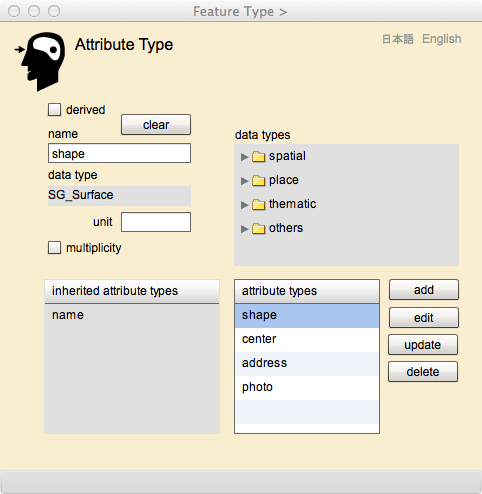

Attribute Type Designer
属性型の設計
Attribute Type ページ は，地物型及び関連型がもつ属性を宣言するためにあります．地物は多くの場合，属性をもちます．例えば，「今度の地震は大きかった」という表現は，地震という地物は規模という属性をもち，その値は「大きい」だったということを短く言い表したと考えられます．より形式的にいうと，地物は属性をもち，属性はその名称と，その値が準拠するデータ型で定義でき，この例の場合は，属性の名称は「規模」であり，その値は文字列というデータ型をとり，値は「大きい」になる，ということです．普段からこのような回りくどいことを言っていたら，コミュニケーションが成り立ちませんので，私たちは，前提となるルールに関する知識は頭の中に置きつつ，短い表現で済ましています．
しかし，地理空間情報の記述や交換を行うときは，頭の中にあるルールを表に出し，それに従って地物型や属性型の定義を行います．そうでないと，「規模が大きい」程度でいいのか，「震度６強」というような，定量的な示し方をすべきかが分からないので，属性の記述ができません．
ところでデータ型について，少し詳しく説明しましょう．gittok では，属性のデータ型には，幾何形状やそれらの関係を示す空間データ型，場所を示す場所データ型，地物の単純に説明する主題データ型，瞬間や期間を示す時間データ型があります．ただし，時間データ型は現状，使用できません．
主題属性のデータ型
gittok では，単純な値をとる主題属性のデータ型として，整数 (Integer)，実数 (Real)，ブール値 (Bool)，文字列 (CharacterString)が使用できます．これらは単純データ型 (simple data type)といわれます．まずは，講義用スライド「06 単純データ型と主題属性」を見るといいでしょう．属性が多重度を持つ場合は，単純データ型をとる値の配列が，属性になります．また，gittok はAdobe社のFlexBuilder 4.5 を使用して開発していますので，単純データ型をとる値の実装は，Actionscript 3.0 の定義に従います．ただし，Real はActionscript では Number, Bool は Boolean，CharacterStringはString と呼ばれています．詳しくはAdobe社が公開している解説をご覧下さい．
主題属性の中で，整数及び実数をデータ型にする属性には，計量の単位を与えることができます．単位の表記法は利用者が独自に考えて下さい （例えば平方メートルはm2など）．ただし，実際に与えられる数値が，その単位になっているかをチェックする方法はありませんので，利用者は，数値と単位の関係について，自分で責任をもたなければいけません．ちなみに gittok では座標はスクリーン座標で記録しますが，操作は，地上の平面座標に換算してから実行します．その単位はメートルです．
空間属性のデータ型
空間属性とは，位置や形状等，地物がもつ空間的な性質を示す属性です．空間属性について知りたい人は，講義用スライド「07 空間スキーマ」をお読み下さい．
かつて地理情報システム（GIS）では，実世界の諸現象は図形とその他の属性の対で表現するとしてきました．しかし，実世界の存在は，様々な側面から記述することができます．例えば，「一番古い建物の名前を知りたい」という要求には，建物の竣工日と名称が使われ，この検索には図形は関与しません．つまり，位置や形状は，他の属性と同等の，実世界の現象を語る一つの側面といえます．そこで図形は特別なものではなく，地物がもつ多くの性質の中にある空間的な性質と考えるべきです．もちろん複数の空間属性をもつ地物があるでしょうし，空間属性を持たない地物もあるでしょう．
gittokでは，空間属性のデータ型は，点 (SG_Point)， 曲線 (SG_Curve)，曲面 (SG_Surface)，そしてそれらの組み合わせとして表現される幾何複体 (SG_Complex) に分類されます．
地物の空間的な性質は幾何と位相に分けることができます．幾何は位置と形状のことであり，位相は幾何に潜む相互関係のことです．例えば配電網について考えてみましょう．配電網は電柱と配電線からなります．電柱の幾何的な性質は「点」といえます．一方配電線は「曲線」です．ところで，配電網の中で電気が流れるためには，電柱を介して配電線どうしが連結していなければいけません．つまり，“連結”は配電網の特性の一つです．これを表現するのが位相です．位相は，弾性的な変形が加えられても変化しない性質のことを指します．例えば配電線の形状は，風が吹けば変化しますが，切れない限り，連結の関係は保持されます．
さて，点 (SG_Point) は例えば街路灯のように，小さな面積や体積しかもたない地物の空間属性ですが，交差点のように，それ自体の面積は小さいけれど，他の地物（例えば道路中心線）の境界点になるような地物を表現するためにも使用されます．従って，点は，その位置とともに，それに出入りする，つまり連結する線はどれか，といった，位相データをもつことができます．このような位相データは双対境界といいます．
曲線 (SG_Curve) は，例えば道路の中心線や，行政の境界線など，細長い地物や，領域で表現される地物の境界線を示すために使われます．点には，それに出入りする線がどれか，という位相データをもたせましたが，曲線にはその境界となる端点はどれか，また，その線が境界になる左側，及び右側の面はどれか，といった位相データをもたせます．ところで，曲線というからには，スムーズに曲がる線を思い浮かべるかも知れませんが，現状，gittok では，折れ線しかあつかうことができません．
曲面 (SG_Surface) は，例えば森林や畑のように，面的な広がりをもつ領域を示すために使われます．面は一つ以上の線の繋がりでできる輪を境界にしますが，中に池のような場所があると，外側だけでなく，内側にも境界ができます．ところで，曲面というからには，ドーム球場の屋根のように，スムースな曲面を想像するかも知れませんが，現状，gittok では，平らな面しか扱うことはできません．
ところで，曲面という言葉で示される領域は，境界線の内側です．局面は，境界はどれか，を示すデータを含みますが，境界となる曲線自体は含みません．また，曲線はその両端の点を含みません．さらに，点には境界はない，と考えます．一般的に幾何プリミティブは境界を含まない「開いた」幾何と考えますが，境界をもたない点は，例外です．
さて，空間幾何属性には，幾何複体 (SG_Complex) もあります．幾何複体とは，上記の幾何属性の組み合わせのことを指します．例えば，道路ネットワークは，複数の交差点と，複数の中心線の集まりなので，幾何複体です．この例でもそうですが幾何複体は複数の幾何プリミティブと，その境界の組み合わせであり，「閉じた」幾何と考えます．
空間属性には，座標は入らないのかという質問があるかもしれません．座標及び座標列は点や曲線などを構成する部品であり，それ自体は空間属性ではありません．
これまでの説明からも想像できるように，gittok は２次元の空間を対象としています．
場所属性のデータ型
場所属性は，間接的に地物の位置を示す属性を指します．gittok では場所は2種類あると考えます．その第一は，地球上の位置を間接的に示す場所，第二は情報空間中の位置を示す場所です．地球上の位置を示すには，私たちは郵便番号，住所，国名，そしてよく知られた地名などを使用します．これらは地理識別子 (geographic identifier) とも呼ばれます．一方情報空間中の位置指定にはURL (Uniform Resource Locator) などを使用します．gittok では，アドレス (address)，URL, そして画像，映像，音声が格納されている場所を示すURLを場所 属性のデータ型として使用することができるようにしています．そして，これらの場所を表す言葉として，place を用いています．このような意味での場所属性については，講義用スライド「09 参照系」で解説しています．
アドレス (address)は，郵便番号，住所，国名の組み合わせとします．アドレスの操作は Address Editor で行いますので，詳細は，そちらの説明を参照して下さい．
URL (Uniform Resource Locator) は，インターネット上のリソース（資源）を特定するための形式的な記号の並びのことです．一般的にはhttp:というスキーム（リソースに到達するための手段を示す記号）を使う，ホームページのアドレスと考えられていますが，file: ftp: など，データファイルや文書等の位置を示すスキームもあります．ただし，インターネットで使われる規格を提供しているW3Cは，URLを正式の言葉とはしていません．それは，似たようなものとしてURN (Uniform Resource Name) などがあるためで，より包括的なことばとして URI (Uniform Resorce Identifier) を使うように求めています．従って，これらの状況 について詳しく知りたい場合は，関連の書籍等で確認して下さい．一方で，今日でもURLという言葉は，Web内のリソースの場所を示す言葉として一般的に使われていますので，gittok でもURLを使用しています．URLの操作は URL Editor で行いますので，取り扱いの詳細は，そちらの説明を参照して下さい．
画像の場所 (image URL)は，画像が格納されている場所を示す URL です．gittok では，演習をする前に，パソコンに画像を格納しておき，それを呼び出して，地物に関連付けをします．詳細についてはImage Editorの説明を参照して下さい，
映像の場所 (video URL)は，ビデオが格納されている場所を示す URL です．gittok では，演習をする前に，パソコンに映像 (f4v形式) を格納しておき，それを呼び出して，地物に関連付けをします．詳細についてはVideo Editorの説明を参照して下さい，
音声の場所 (sound URL)は，音声が格納されている場所を示す URL です．gittok では，演習をする前に，パソコンに音声 (mp3形式) を格納しておき，それを呼び出して，地物に関連付けをします．詳細についてはSound Editorの説明を参照して下さい，
時間属性のデータ型
to be wrrtten
Attribute Type ページ の操作画面

図1．Attribute Type ページ の操作画面
FIELDS
name（編集可能）
属性型の名前をここにキーインします．名前はアルファベットで，頭文字は小文字とします．この名前は同一の地物型の中では一意でなければいけません．もし重複するとエラーになります．また，名前は必ず与えなければいけません．
data types（選択可能）
属性がとることのできるデータ型の一覧です．属性には空間属性 (spatial)，場所属性 (place) ，主題属性 (thematic) ，時間属性 (temporal) があり，それぞれは更に具体的なデータ型を含みます．
data type
属性がとるデータ型を，左側にあるdata types一覧から選択すると，ここにその型名が表示されます．
unit（編集可能）
属性がとることのできる単位を，ここに指定します．
inherited attribute types
この地物型が，より上位の地物型から継承してきた属性型の一覧が，ここに表示されます．
attribute types（選択可能）
このページで定義した属性型の一覧が，ここに表示されます．すでに定義された型の編集や削除を行うときは，事前に，この表から該当する属性型を指定しなければいけません．
BUTTON
derived
属性が派生属性の場合は，ここをチェックします．それは，この属性が操作の戻り値になる場合です．
multiplicity
属性が複数の値をとる場合は，ここをチェックします．例えば，一つの地物インスタンスが複数の名前で呼ばれることがあるときなど．
add
属性型の定義が終了したら，このボタンを押します．すると，属性型の定義が登録され，その名前がattribute typesに追加表示されます．
edit
attribute types一覧上で適当な属性型を選択した後，このボタンを押すと，属性型の構成要素がAttribute Type Modeler内の各欄に表示され，編集可能になります．
update
属性型の編集が終了したら，このボタンを押します．すると，属性型の定義が再登録されます．名前が変ると，attribute typesの表示も変ります．
delete
attribute types一覧上で適当な属性型を選択した後，このボタンを押すと，該当する属性型が消去されます．
clear
現在表示している属性型のパラメータが全て消去され，新たな属性型の定義が可能になります
日本語
今あなたが読んでいるドキュメントが表示されます．
English
You can read the tutorial written in English.